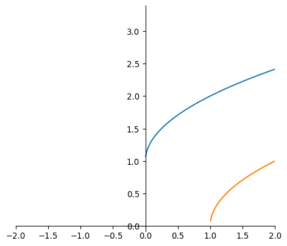
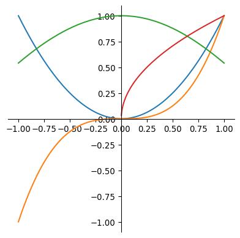
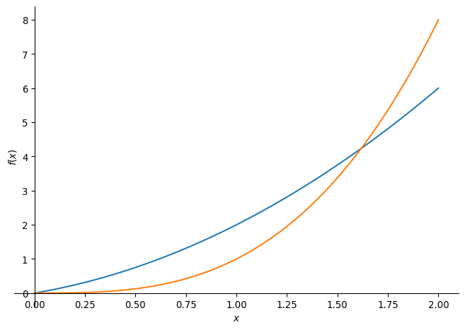
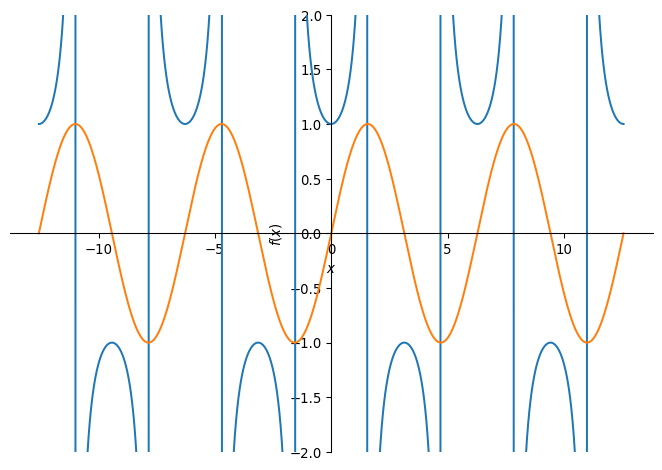
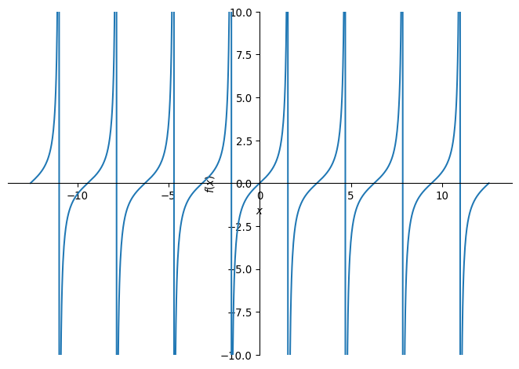
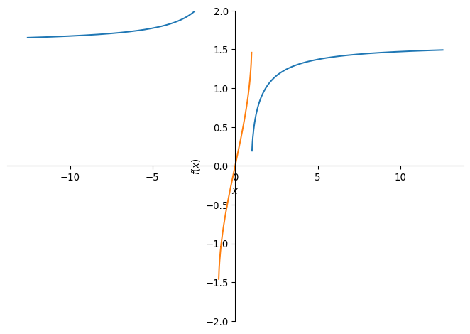
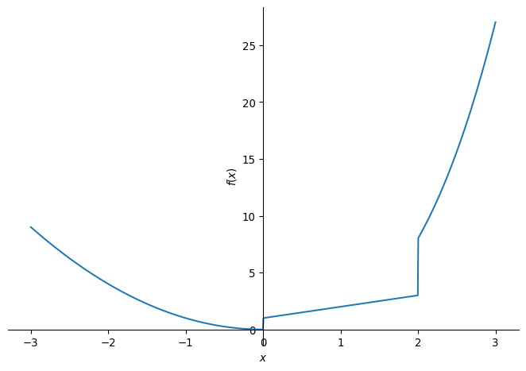

import numpy as np
import matplotlib.pyplot as plt
def centeraxes():
"""Centers axes in the middle"""
ax = plt.gca()
ax.spines['top'].set_color('none')
ax.spines['left'].set_position('zero')
ax.spines['right'].set_color('none')
ax.spines['bottom'].set_position('zero')
return axFunctions
Read: Chapter 1
Terminology
Following is a list of terms that you should know the meaning of.
- What are functions?
- Vertical line test for a function.
- Piece-wise defined functions
- Independent vs. dependent variables.
- Domain vs. range.
- Closed vs. open intervals
Functions: Some properties
- Increasing vs. decreasing
- Even vs. odd
- Linear vs. non-linear
Plotting functions
We can plot a single function as follows:
domain = np.linspace(-5,5, 1000)
func = np.sqrt(domain) + 1
func2 = np.sqrt(domain-1)
# plt.plot(domain, func)
# plt.plot(domain, func2)
plt.plot(domain, func)
plt.plot(domain, func2)
plt.xlim([-2,2])
plt.gca().set_aspect('equal')
centeraxes()
plt.show()/tmp/ipykernel_85732/4150367370.py:2: RuntimeWarning:
invalid value encountered in sqrt
/tmp/ipykernel_85732/4150367370.py:3: RuntimeWarning:
invalid value encountered in sqrt

But we can also plot multiple functions, although this is not necessarily the neatest way, Matplotlib changes colors by default (but we can control it too):
import numpy as np
import matplotlib.pyplot as plt
domain = np.linspace(-1,1, 1000)
func = domain**2
func2 = domain**3
func3 = np.cos(domain)
func4 = np.sqrt(domain)
plt.plot(domain, func)
plt.plot(domain, func2)
plt.plot(domain, func3)
plt.plot(domain, func4)
plt.gca().set_aspect('equal')
centeraxes()
plt.show()/tmp/ipykernel_85732/3654791602.py:8: RuntimeWarning:
invalid value encountered in sqrt

import sympy as sp
x = sp.symbols('x')
y = x**2 + x
y2 = x**3
sp.plot(y, y2, (x, 0, 2) )
Some special functions
Linear functions
Absolute value function/Modulus
Power functions
Polynomials
Rational functions
Algebraic functions
Trigonometric functions
import sympy as sp
# Define the variable
x = sp.Symbol('x')
func1 = sp.cos(x)
func2 = sp.sec(x)
func3 = sp.sin(x)
func4 = sp.csc(x)
func5 = sp.tan(x)
func6 = sp.cot(x)
# Define the piecewise function
# Display the piecewise function
sp.plot(func2, func3, (x,-4*sp.pi,4*sp.pi), ylim = (-2,2))
sp.plot(func5, (x,-4*sp.pi,4*sp.pi), ylim = (-10,10))

Inverse Trigonometric
import sympy as sp
# Define the variable
x = sp.Symbol('x')
func1 = sp.acos(x)
func2 = sp.asec(x)
func3 = sp.asin(x)
func4 = sp.acsc(x)
func5 = sp.atan(x)
func6 = sp.acot(x)
# Define the piecewise function
# Display the piecewise function
sp.plot(func2, func3, (x,-4*sp.pi,4*sp.pi), ylim = (-2,2))
Exponential functions
Logarithmic functions
Transcendental functions
Piecewise
import sympy as sp
# Define the variable
x = sp.Symbol('x')
# Define the piecewise function
piecewise_func = sp.Piecewise(
(x**2, x < 0), # x^2 when x < 0
(x + 1, (x >= 0) & (x <= 2)), # x + 1 when 0 <= x <= 2
(x**3, x > 2) # x^3 when x > 2
)
# Display the piecewise function
sp.plot(piecewise_func, (x,-3,3))